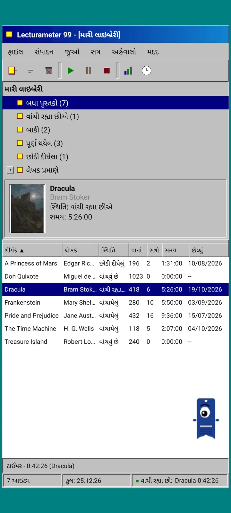
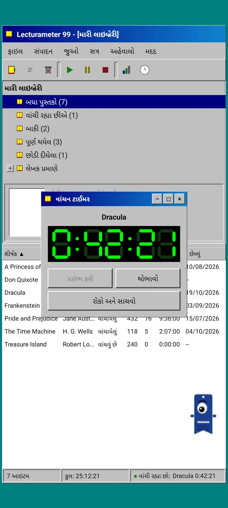
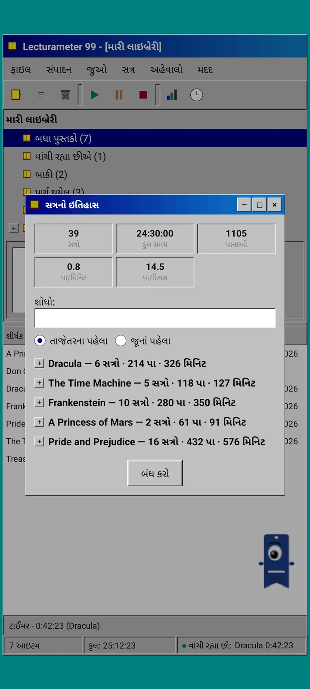
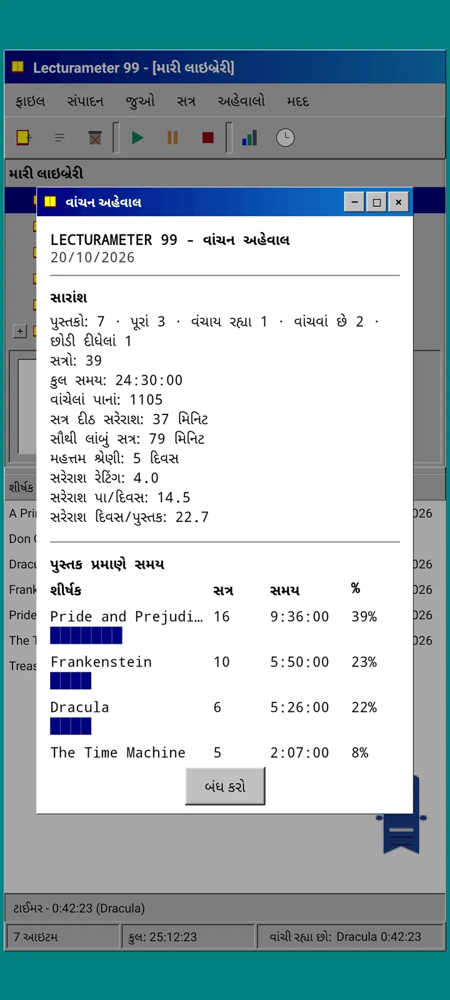

બ્લોગ · 2026-09-24
Lecturameter 1999: જો Lecturameter જૂના PC પ્રોગ્રામ જેવું દેખાતું હોત તો કેવું હોત?
Lecturameter નો એક વૈકલ્પિક ક્લાયન્ટ, જેમાં વિન્ડો, મેનુ, ટેબલ અને LCD ટાઈમર છે, અને જે તમારા વાસ્તવિક બેકઅપ ખોલે છે. તે કેવી રીતે બન્યું, તેમાં શું છે અને જાણી જોઈને શું છોડી દીધું છે. ટૂંક સમયમાં Play Store અને App Store પર મફત આવી રહ્યું છે.
Lecturameter 1999 થોડા મહિનાથી તૈયાર થઈ રહ્યું છે. મેં તેને ટુકડે ટુકડે, અહીં-તહીં, ઉતાવળ વગર અને કોઈ યોજના વગર બનાવ્યું છે. મેં તેને ગંભીરતાથી ત્યારે લીધું જ્યારે મેં જોયું કે iOS આવૃત્તિ મારી ધારણા કરતાં સરળ હતી અને તેને પૂરું કરવા માટે મારી પાસે જગ્યા બચી હતી.
આ એકમાત્ર પ્રયોગ નથી. Lecturameter વિશ્વના બીજા પ્રોજેક્ટ પણ મારા મનમાં છે, કેટલાક ઘણા આગળ વધેલા અને કેટલાક હમણાં જ શરૂ થયેલા. તેમાંના મોટા ભાગના કદાચ ક્યારેય પ્રકાશમાં નહીં આવે.
તે ક્યાંથી આવ્યું?
બધું એક પ્રયોગથી શરૂ થયું, જેની આસપાસ હું લાંબા સમયથી ફરતો હતો.
વિચાર એ હતો કે Lecturameter ને શરૂઆતથી ઘણી વાર ફરી બનાવવું, સંપૂર્ણપણે અલગ ડિઝાઇન શરતો હેઠળ. વાસ્તવિક ઍપને અડક્યા વગર અને તેની જગ્યા લેવાના કોઈ ઇરાદા વગર. સાત આવૃત્તિઓ બની. એક 2016 ની કોઈ Android ઍપની નકલ કરતી હતી, બીજી કલ્પના કરતી હતી કે 2036 માં તે કેવી દેખાશે, બીજીએ લાઇબ્રેરીને પુસ્તકોના કબાટમાં ફેરવી દીધી જેમાં તમે જેમ વાંચો તેમ પુસ્તકોની કરોડરજ્જુ જાડી થતી જાય, અને બીજી બે સ્ક્રીનવાળા હેન્ડહેલ્ડ કન્સોલ માટે ડિઝાઇન કરાઈ હતી.
મને સૌથી વધુ 1999 ગમ્યું. નેવુંના દાયકાના અંતનો એક ડેસ્કટૉપ પ્રોગ્રામ: ગીચ, કામનો, બધું વિન્ડો, મેનુ અને ટેબલમાં. મેં નક્કી કર્યું કે તેને મજાની કસરત તરીકે ધીમે ધીમે પૂરું કરીશ અને તેને સંપૂર્ણ ક્લાયન્ટ બનાવીશ, જેની નીચે વાસ્તવિક Lecturameter ડેટા હોય.
તે શું છે?
Lecturameter 1999 એક સ્વતંત્ર ઍપ છે, Lecturameter થી અલગ. તમે તેને ખોલો ત્યારે તમને ટીલ રંગના ડેસ્કટૉપ પર એક મોટી કરેલી વિન્ડો દેખાય છે. ઉપર ટાઇટલ બાર અને મેનુ: ફાઇલ, સંપાદિત કરો, જુઓ, સત્ર, રિપોર્ટ્સ અને મદદ. નીચે પિક્સેલવાળા આઇકનની ટૂલબાર. વચ્ચેનો ભાગ બે ભાગમાં વહેંચાયેલો છે: લાઇબ્રેરીનું ટ્રી અને કવર સાથેની પ્રિવ્યૂ પેન, અને દરેક પુસ્તક માટે એક પંક્તિવાળું ટેબલ. સૌથી નીચે સ્ટેટસ બાર, જેમાં આઇટમની સંખ્યા, કુલ સમય અને તમે જે પુસ્તક વાંચી રહ્યા છો તે દેખાય છે.



Lecturameter જેવો જ ડેટા
આ તે ભાગ છે જે પ્રયોગને ઉપયોગી વસ્તુમાં ફેરવે છે. 1999 ના ખોળિયાની નીચે વાસ્તવિક Lecturameter ડેટા મોડેલ છે, જેમનું તેમ કૉપી કરેલું: એ જ પુસ્તકો, એ જ સત્રો, એ જ સ્થિતિઓ, રેટિંગ અને નોંધો. તે જે બેકઅપ નિકાસ કરે છે તે Lecturameter જે ફાઇલ નિકાસ કરે છે તે જ છે, અને જે આયાત કરે છે તે પણ તે જ.
વ્યવહારમાં તેનો અર્થ એ કે તમે ફાઇલમાં જઈને તમારો બેકઅપ આયાત કરી શકો અને તમારી આખી લાઇબ્રેરી 1999 ના ટેબલમાં જોઈ શકો. એક અઠવાડિયું LCD ટાઈમર સાથે વાંચો. નિકાસ કરો. નવા સત્રો સાથે આધુનિક ઍપમાં પાછા જાઓ અને રસ્તામાં એક પણ ફીલ્ડ ગુમાવ્યા વગર. Goodreads CSV પણ અંદર અને બહાર બંને રીતે જાય છે.
પુસ્તકની શોધ Lecturameter જેવી જ છે: તે ઍપના પોતાના કૅટેલોગ અને Google Books માંથી પૂછે છે, અને શીર્ષક, લેખક, પાનાં, ISBN અને કવર ભરી દે છે. કવરને પોસ્ટરાઇઝ કરીને સ્મૂધિંગ વગર દોરવામાં આવે છે જેથી તે તે સમયના GIF જેવું દેખાય.
સત્રો, ઇતિહાસ અને રિપોર્ટ
વાંચનનો પ્રવાહ Lecturameter નો જ છે, વિન્ડોમાં ઢાળેલો. તમે ટેબલમાં એક પુસ્તક પસંદ કરો છો અને પ્લે બટન દબાવો છો. ટાઈમર વિન્ડો ખૂલે છે, કાળા પર લીલા રંગના સાત-સેગમેન્ટ ડિસ્પ્લે સાથે. તમે તેને ખસેડી શકો, ટાસ્કબારમાં નાનું કરી શકો અથવા બંધ કરી શકો: સમય સ્ટેટસ બારમાં ગણાતો રહે છે.
તમે સ્ટૉપ દબાવો ત્યારે સત્ર સાચવવાનો ડાયલૉગ ખૂલે છે: તારીખ, મિનિટ, પહેલું અને છેલ્લું પાનું, ટિપ્પણી. તમે ટાઈપ કરો તેમ સારાંશ પાનાં અને ઝડપ ગણી લે છે. જો તમે પુસ્તકના છેલ્લા પાના સુધી પહોંચો, તો તે પૂછે છે કે તમે તે પૂરું કર્યું કે નહીં. મૅન્યુઅલ સત્રો સત્ર મેનુમાંથી ઉમેરાય છે.
ઇતિહાસ સત્રોને પુસ્તક પ્રમાણે પ્લસ અને માઇનસવાળા ટ્રીમાં ગોઠવે છે, ઉપર પાંચ આંકડા સાથે: સત્રો, કુલ સમય, પાનાં, પ્રતિ મિનિટ પાનાં અને પ્રતિ દિવસ પાનાં. સત્ર સંપાદિત કરવા તેના પર બે વાર ટૅપ કરો, કાઢી નાખવા લાંબો સમય દબાવી રાખો.
આંકડા એ મોનોસ્પેસ ટેક્સ્ટમાં વાંચનનો રિપોર્ટ છે, જાણે પ્રિન્ટરમાંથી નીકળ્યો હોય: સૌથી લાંબી સ્ટ્રીક અને સરેરાશ રેટિંગ સાથેનો સારાંશ, બ્લૉક બાર સાથે દરેક પુસ્તક પર લાગેલો સમય, પ્રતિ દિવસ પાનાંમાં ઝડપ, દરરોજ વાંચેલા પાના મુજબ અક્ષરોથી દોરેલું વર્ષનું કૅલેન્ડર, અને છેલ્લા સાત દિવસ.



Pagi 99
Pagi પણ 1999 ની સફર કરે છે. તે એ જ એક આંખવાળા બુકમાર્કની છાયાકૃતિ છે, પણ પિક્સેલવાળી, અને તે સમયના ઑફિસ આસિસ્ટન્ટ્સની જેમ સ્ક્રીન પર છૂટથી ફરે છે. તમે તેને આંગળીથી ખેંચી શકો છો, ટૅપ કરવા પર તે એક ટૂંકી લીટી બોલે છે અને તમે શું કરી રહ્યા છો તે પ્રમાણે તેના હાવભાવ બદલાય છે: પુસ્તક શોધતી વખતે તે વિચારે છે, ટાઈમર ચાલતું હોય ત્યારે વાંચે છે અને સત્ર સાચવો અથવા પુસ્તક પૂરું કરો ત્યારે ઉજવણી કરે છે.
ઍપની ટીપ્સ પીળા બલૂનમાં Pagi સાથે જોડાયેલી દેખાય છે, દરેક ફક્ત એક વાર. જો તમે તેમને ફરી જોવા માંગતા હો, તો તે મદદમાં, આજની ટીપમાં છે.



શું બહાર રાખ્યું છે
Lecturameter 1999 જાણી જોઈને વધુ સરળ છે. તે એક પ્રયોગ છે અને, સિદ્ધાંતમાં, રિલીઝ પછી તેનો વધુ વિકાસ થશે નહીં. નવી સુવિધાઓ Lecturameter માં આવતી રહેશે.
તેને બનાવતી વખતે મેં નક્કી કર્યું કે જે વાંચનના પ્રવાહને અસર કરતું નથી તે બહાર. એટલે જ Lecturameter 1999 માં Pro નથી. જે તમે જુઓ છો, તે જ તમને મળે છે.
Lecturameter 1999 Lecturameter જેટલી ભાષાઓને સપોર્ટ કરે છે તે બધી ભાષાઓમાં આવશે.
ક્યારે?
iOS માટે Lecturameter અને આવૃત્તિ 3.7 બહાર પડ્યા પછી તે Play Store અને App Store પર મફત આવશે. તે પૂરું થઈ ગયું છે અને મારા ફોન પર ચાલે છે. પ્રકાશિત કરતા પહેલાં મારી વાસ્તવિક લાઇબ્રેરી સાથે ટેસ્ટિંગ અને છેલ્લી બારીકાઈઓ બાકી છે. જ્યારે તે ઉપલબ્ધ થશે ત્યારે હું અહીં, X પર અને Reddit પર જાહેરાત કરીશ.
ત્યાં સુધી, Lecturameter હજી Lecturameter જ છે, તેની થીમ્સ, પડકારો અને Bingo સાથે. 1999 આવૃત્તિ એ જ ડેટાને જોવાની બીજી રીત છે.
રાહ જોતી વખતે, Android પર Lecturameter
વાંચતા રહો: Lecturameter 1999 · વાંચનનો સમય કે પાનાં · વાંચન ટાઈમર